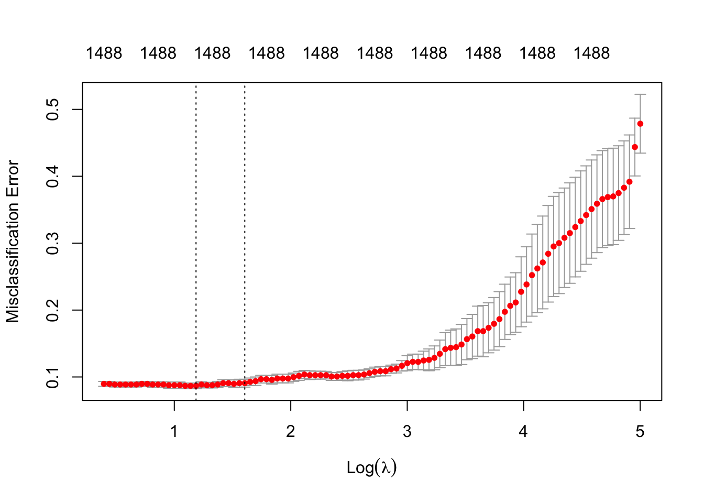

library(data.table)
library(glmnet)
library(ggplot2)
library(mlbench)
library(caret)
library(splines)
library(ggeffects)Machine Learning Lab
Lab 1
Part 1: Bernie Sanders and Donald Trump tweets.
1.
# load data
trumpbernie <- fread(file = "~/Documents/ML/Labs/Lab1/trumpbernie.csv")
# inspect
# trumpbernie[1:10,1:10]
dim(trumpbernie) [1] 1003 1496The dataset is 1003-row and 1496-column one. The number of variables (1496) > the number of observation (1003), so this dataset is high-dimensional. Based on this, a standard logistic regression won’t work well for the purpose of prediction due to overfitting and multilinearity.
2.
mymodel <- glm(trump_tweet ~ ., data = trumpbernie, family="binomial")Warning: glm.fit: algorithm did not convergesum(!is.na(coef(mymodel)))[1] 1001coef(mymodel)[(1001:1050)] popul popular possibl post potenti poverti power
349.33967 -771.91767 -30.26994 25.75710 -380.91299 59.38732 NA
practic prayer prefer premium prepar pres prescript
NA NA NA NA NA NA NA
present presid presidenti press pressur pretti prevent
NA NA NA NA NA NA NA
previous price primari prime prioriti prison privat
NA NA NA NA NA NA NA
privileg pro probabl problem process proclaim produc
NA NA NA NA NA NA NA
product profit program progress project promis proper
NA NA NA NA NA NA NA
propos protect protest proud provid public puerto
NA NA NA NA NA NA NA
pull
NA # Extract predictions on training data & observed values
comparison_df <- data.frame(train_predictions=mymodel$fitted.values,
observed=mymodel$y)
# Apply prediction threshold
comparison_df$train_predictions<-ifelse(comparison_df$train_predictions>=0.5,
yes = 1,
no = 0)
# Compute accuracy (scale: 0-1, 0=0%, 1=100%)
nrow(comparison_df[comparison_df$train_predictions==comparison_df$observed,]) /
nrow(comparison_df)[1] 13.
# format the outcome variable as a factor variable
trumpbernie$trump_tweet <- factor(trumpbernie$trump_tweet, levels = c(0,1))
# Use package "caret" to do k-fold cross-validation
tc <- caret::trainControl(method = 'cv', number = 3)
set.seed(12345) # Set to ensure that folds are the same across models
linear_model <- caret::train(trump_tweet ~ .,
data = trumpbernie,
method = "glm",
trControl = tc,
family = "binomial")Warning: glm.fit: algorithm did not converge
Warning in predict.lm(object, newdata, se.fit, scale = 1, type = if (type == : prediction from rank-deficient fit; attr(*, “non-estim”) has doubtful cases
linear_model$results$Accuracy[1] 0.533384pred_class <- predict(linear_model, newdata = trumpbernie)
train_acc <- mean(pred_class == trumpbernie$trump_tweet)
train_acc[1] 1Accuracy (I believe this is 1 - the test error) is 0.533384, which means this model is totally guessing
training error is 0
So the results are overfitted.
4.
X <- trumpbernie[,-c('trump_tweet'),with=F] # Exclude response and id columns.
X <- as.matrix(X) # Make input data into a matrix
cvglmnet <- cv.glmnet(x = X,
y = trumpbernie$trump_tweet,
nfolds = 5,
standardize = TRUE,
family='binomial',
alpha=0,
type.measure = 'class')
cvglmnet
Call: cv.glmnet(x = X, y = trumpbernie$trump_tweet, type.measure = "class", nfolds = 5, standardize = TRUE, family = "binomial", alpha = 0)
Measure: Misclassification Error
Lambda Index Measure SE Nonzero
min 3.276 83 0.08674 0.004135 1488
1se 4.979 74 0.09073 0.005861 1488cvglmnet$cvm[cvglmnet$index[[1]]][1] 0.08673978cvglmnet$cvm[cvglmnet$index[[2]]][1] 0.09072782Measure (in the cvglmnet) is the Error, so the accuracy would be 1 - Error.
For min, there is a improved accuracy (0.9132602 > 0.533384), this is a better model.
With \(\lambda\) increasing, variance decreased and the bias increased, which is worthful!
5.
plot(cvglmnet, sign.lambda = 1)
1488 indicates the number of nonzero coefficients is 1488.
6.
best_coefs <- coef(cvglmnet, s = "lambda.min")
best_coefs_dt <- data.table(word=rownames(best_coefs),
coef=best_coefs[,1])
best_coefs_dt[order(coef,decreasing = T)] word coef
<char> <num>
1: atlanta 0.1492730
2: Npme 0.1425327
3: patriot 0.1371343
4: colorado 0.1347370
5: sacrific 0.1294068
---
1492: vulner -0.1316845
1493: view -0.1323054
1494: visit -0.1328930
1495: volunt -0.1334961
1496: (Intercept) -0.1395247After extracting the coefficients at lambda.min, I found that words with positive coefficients (such as atlanta and patriot) are more likely to indicate a Trump tweet, while words with negative coefficients (such as volunt and vulner) are more likely to indicate a Bernie tweet. This is generally consistent with my expectations regarding the language styles of the two politicians: Trump’s tweets tend to focus on geographic locations or patriotic topics, whereas Bernie’s tweets emphasize social vulnerability and volunteer-related actions.
Part 3: K-fold cross validation from scratch (bonus!)
omitted
# dt <- readRDS("dt.rds")
x <- rnorm(100, mean = 0, sd = 1)
y <- 2 * x + rnorm(100, mean = 0, sd = 0.5)
dt <- data.frame(X = x, Y = y)
head(dt) X Y
1 -1.6321676 -2.9620389
2 0.6181952 1.6070036
3 -0.7632214 -1.1227492
4 -2.4289158 -3.8943627
5 1.7724663 3.6673232
6 -0.5902313 -0.6320544my_lm <- lm(y ~ poly(x,2), data = dt)
chunk2 <- function(x,n) split(x, cut(seq_along(x), n, labels = FALSE))
cv_poly <- function(k, d, dt) {
n <- nrow(dt)
folds <- chunk2(1:n, k)
mse_list <- c()
for (i in 1:k){
test_idx <- folds[[i]]
train_idx <- setdiff(1:n, test_idx)
train_data <- dt[train_idx, ]
test_data <- dt[test_idx, ]
model <- lm(Y ~ poly(X, d), data = train_data)
preds <- predict(model, newdata = test_data)
mse <- mean((test_data$Y - preds)^2)
mse_list <- c(mse_list, mse)
}
return(mean(mse_list))
}
cv_poly(5,1,dt)[1] 0.2495171